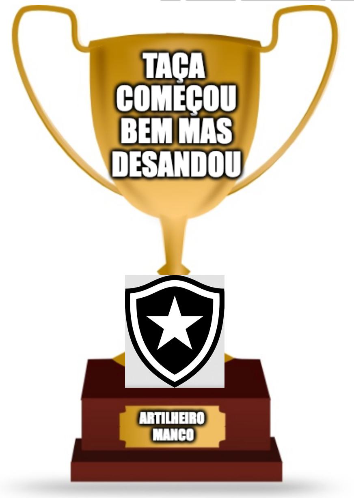
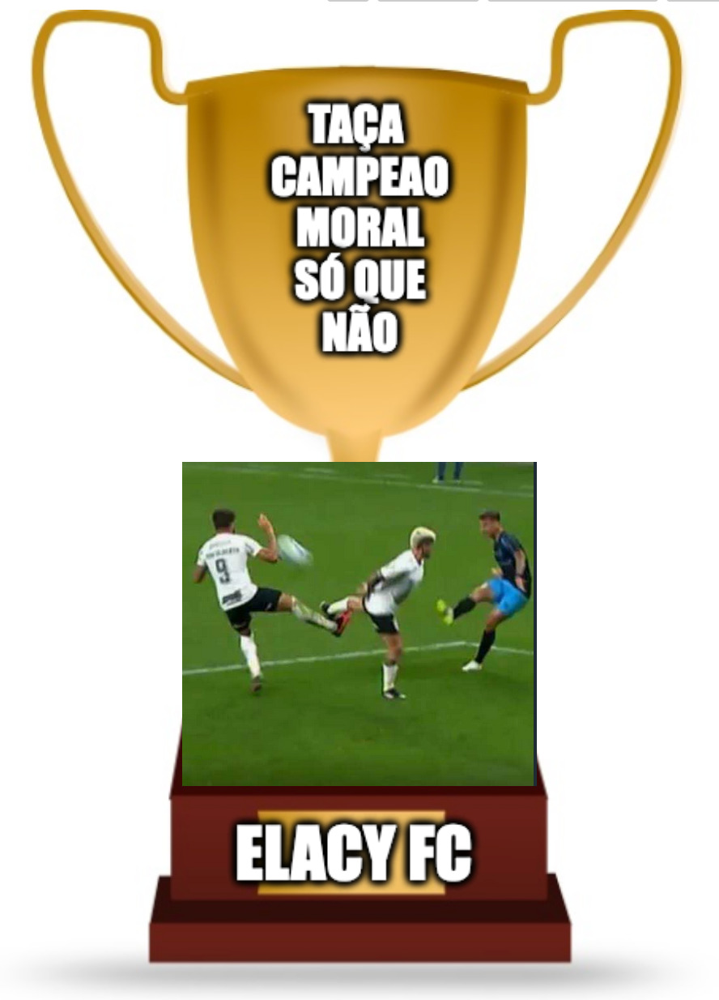
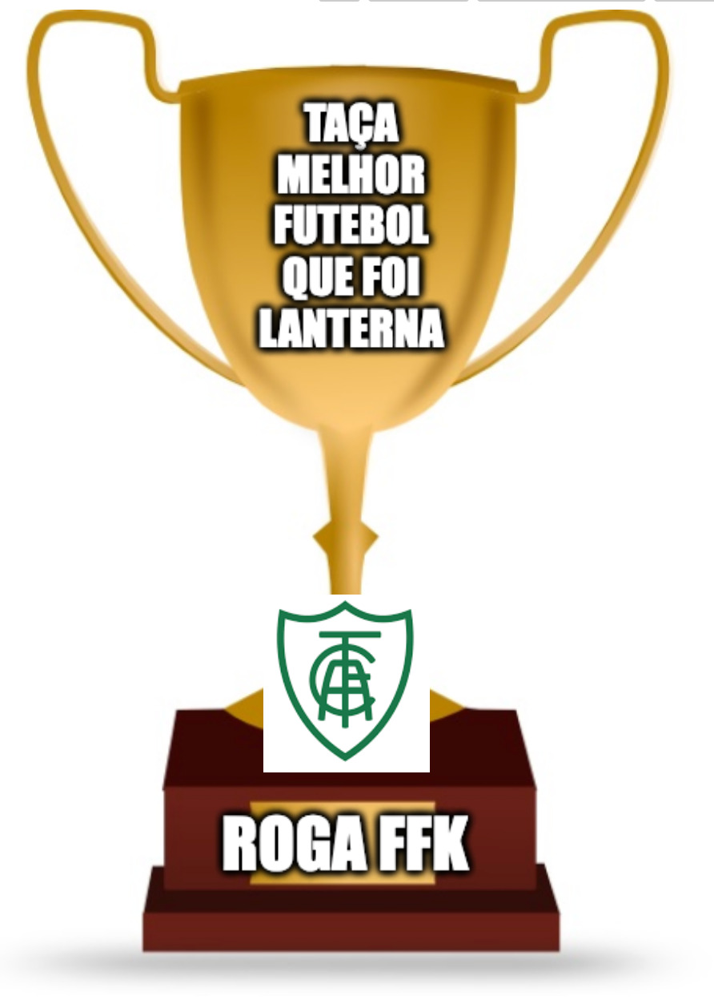
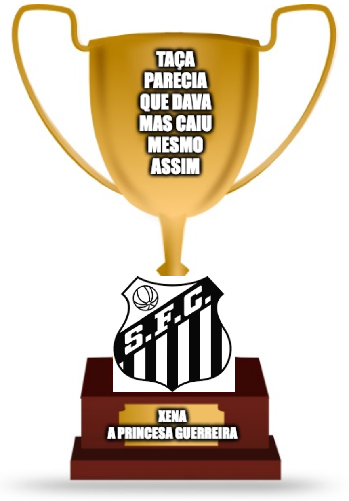
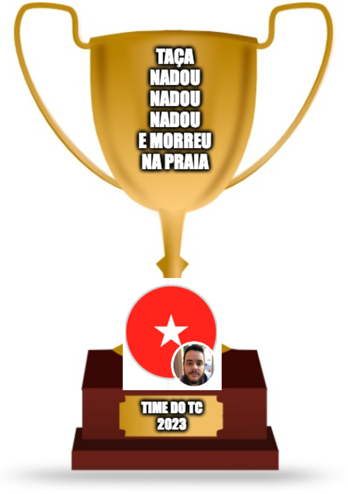
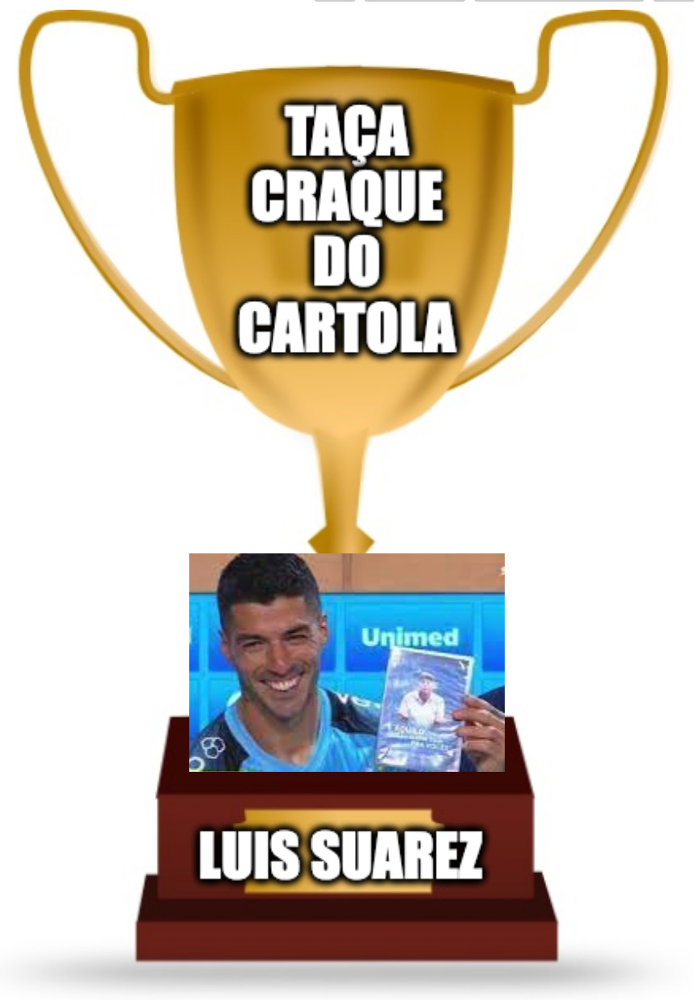

Taça Começou Bem Mas Desandou

Taça Campeão Moral Só Que Não

Taça Melhor Jogador Ex-Grêmio

Taça Melhor Futebol Que Foi Lanterna

Taça Parecia Que Dava Mas Caiu Mesmo Assim

Taça Nadou Nadou Nadou E Morreu Na Praia

Taça Craque do Cartola

Taça Maior Mitada De Um TIme
Taça Campeão Entre OS Prós